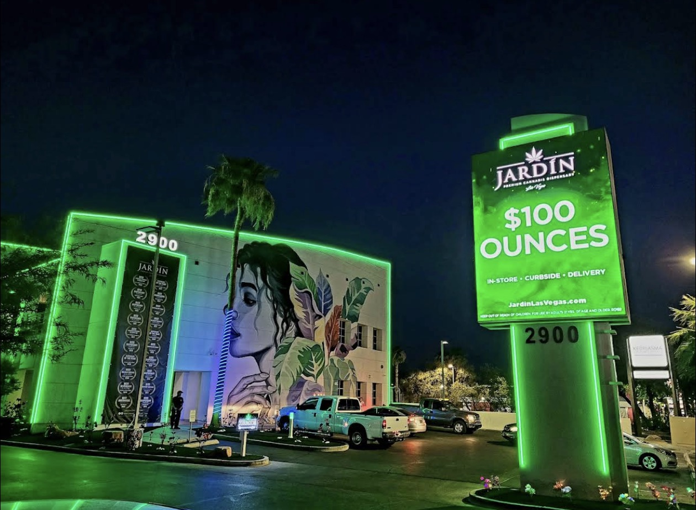
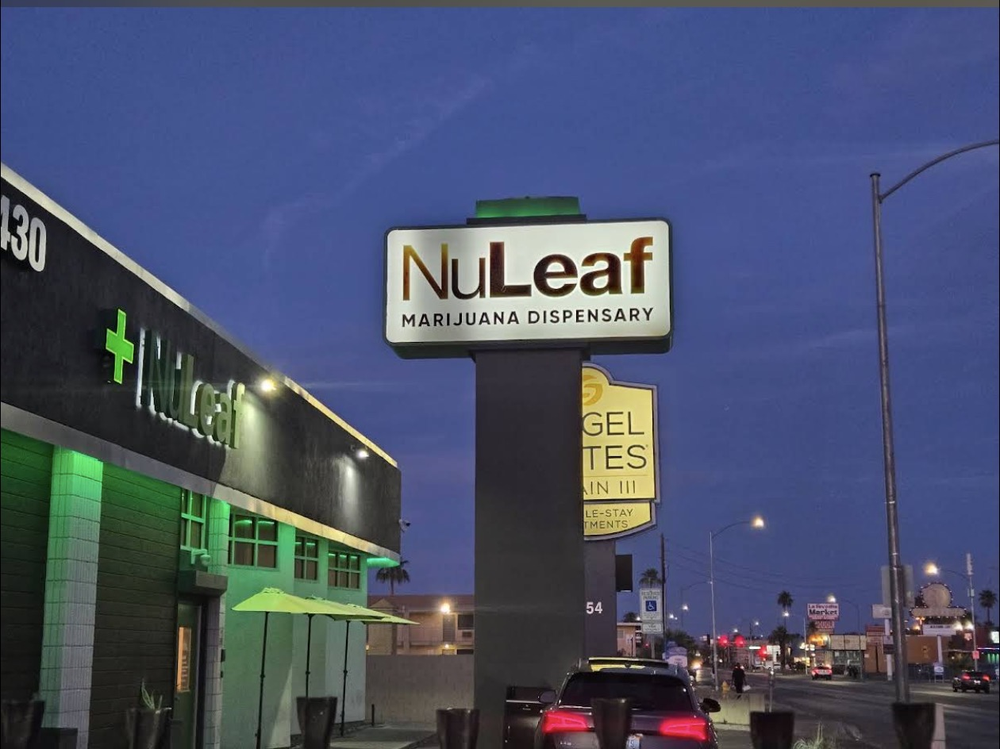
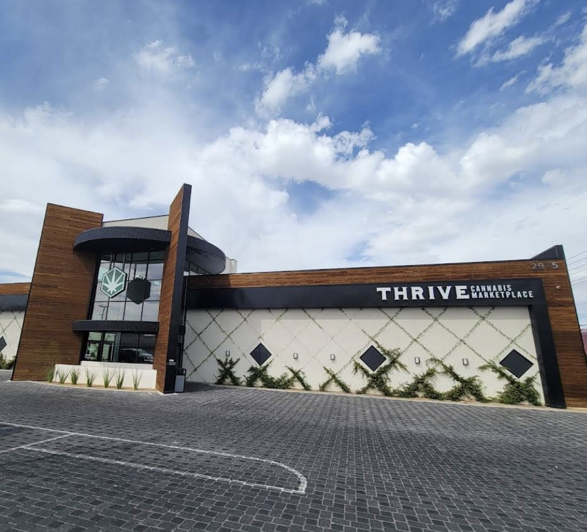
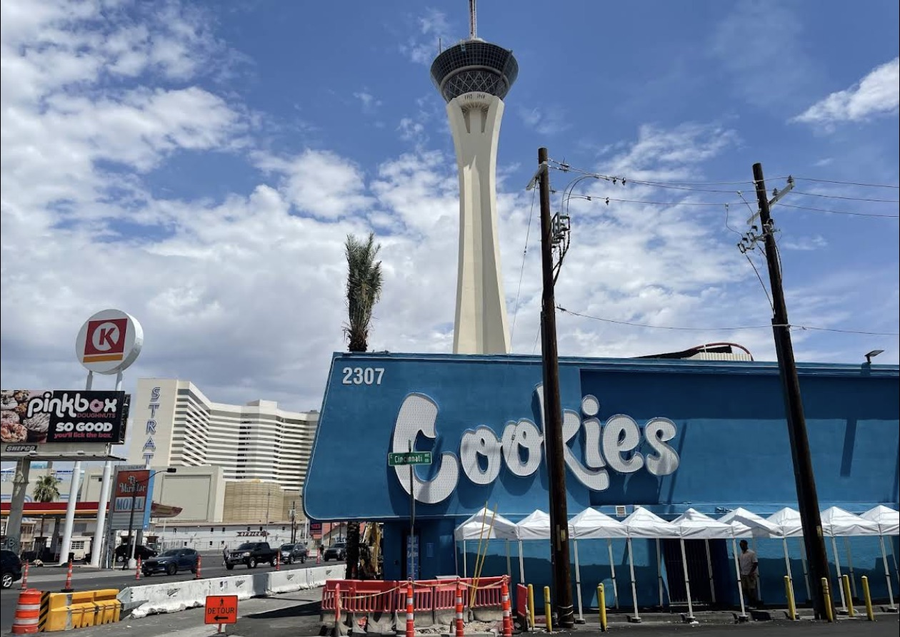
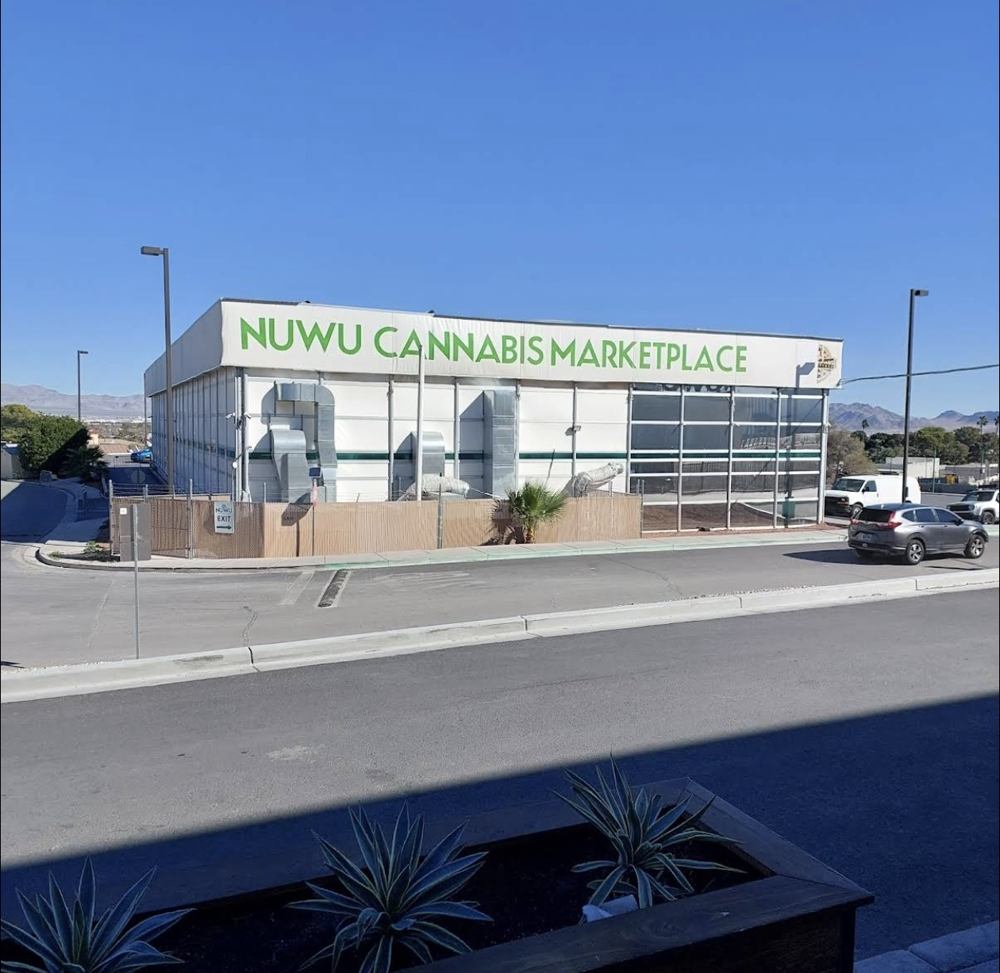
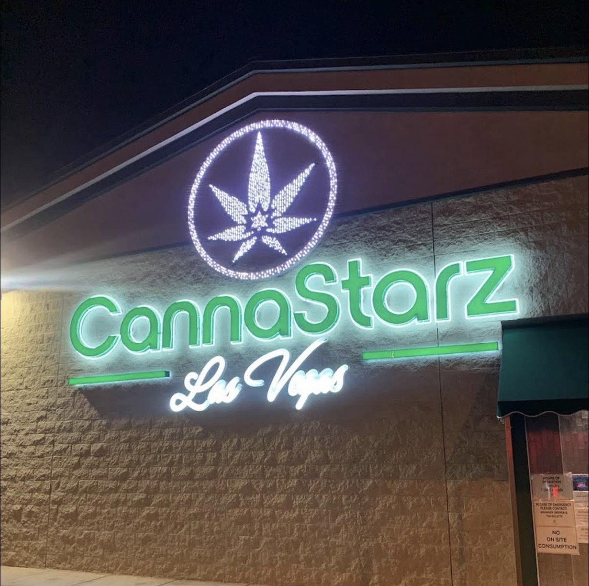
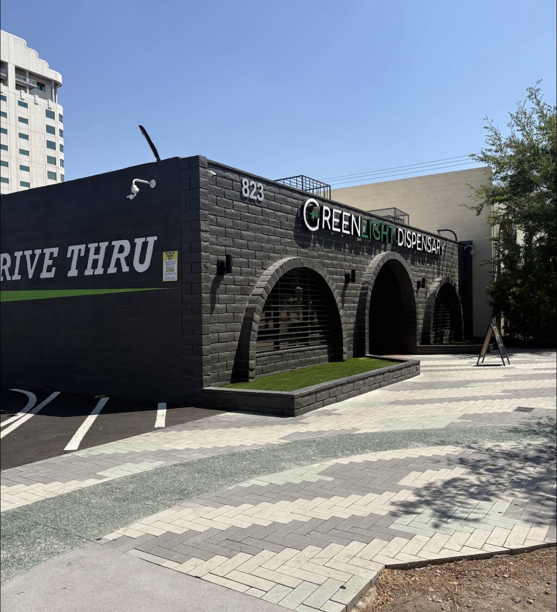
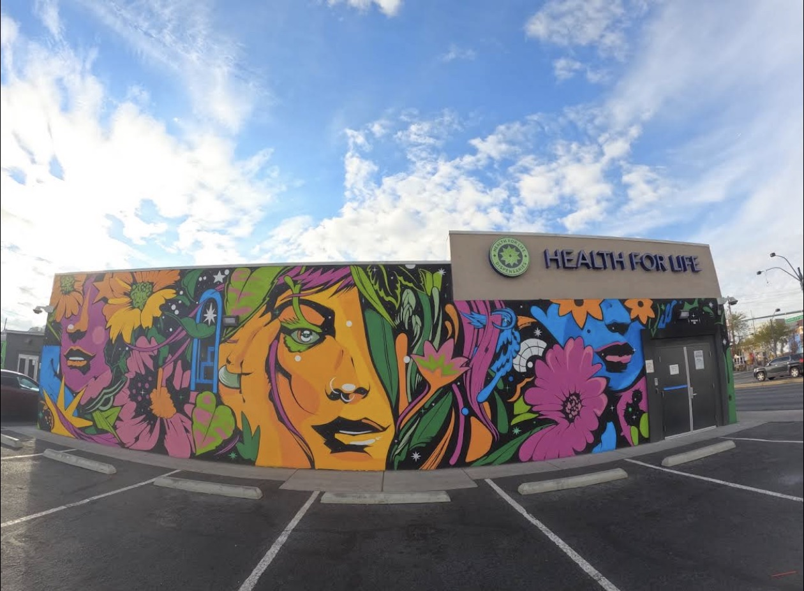

Planet 13 Las Vegas is one of the most famous marijuana dispensaries in the world! located just 0.8 miles from the Las Vegas Strip, for many visitors it’s a walkable option from Las Vegas Boulevard, and an even quicker rideshare from nearby Strip hotels. This massive cannabis superstore offers an immersive experience with interactive floors, food options, and a visually stunning atmosphere that feels more like an attraction than a typical dispensary. convenient front-door drop-off, but have your ID ready—security checks begin as soon as you enter. Prices here tend to be higher than average, but you’re paying for convenience, selection, and the overall Planet 13 experience. Because of its popularity, Planet 13 is often busy at night, on weekends, and during major Las Vegas events. If Snoop Dogg or Willie Nelson are on your playlist, this is a must-see stop while visiting Las Vegas.
View on Google Maps

If you’re looking for a dispensary near the Las Vegas Strip, Oasis Cannabis is worth checking out. Located about half a mile from the Stratosphere Casino on Las Vegas Boulevard (the Strip), Oasis is a popular Las Vegas cannabis dispensary and a convenient stop for both tourists and locals seeking a relaxed, easily accessible, and affordable cannabis experience.
Known for its laid-back atmosphere, friendly staff, consistent sales, and easy parking, Oasis stands out as a reliable marijuana dispensary in Las Vegas near the Strip without the overwhelming crowds found at larger, tourist-heavy stores. Some even consider Oasis to offer some of the best cannabis deals in Las Vegas, especially for value-focused shoppers.
Open daily from 7:00 AM to 2:30 PM, it’s almost always a good time to stop by Oasis Cannabis— whether you’re making a quick visit before heading back to Las Vegas Boulevard or browsing deals on flower, edibles, concentrates, and accessories.

Jardín Premium Cannabis is a popular Las Vegas dispensary located just
west of Las Vegas Boulevard (the Strip), positioned between the Wynn
and Encore and directly across the Strip from Fashion Show Las Vegas.
This prime location makes Jardín an easy and convenient stop for any cannabis consumers
near the Las Vegas Strip.
Jardín is known for its upscale, polished feel, wide product selection, frequent
sales, and knowledgeable, friendly staff. With a strong focus on presentation and
service, Jardin offers a more refined cannabis shopping experience for those who
appreciate a premium, posh atmosphere.
Due to frequent sales and over all great prices Jardín is popular with both tourists and locals,
the store can get busy, especially during evenings and weekends.
Ordering online ahead of time is highly recommended if you want to avoid long
lines and get in and out quickly. However if this is your first time at a dispensary take the
time to check the place out and talk with the staff, it's a very chill enviornment.
If you’re looking for a marijuana dispensary near the Las Vegas Strip
with a premium vibe without premium prices with a great selection of flower, edibles, concentrates, and
accessories, Jardín is the choice.
View on Google Maps

NuLeaf Las Vegas is located just off the Las Vegas Strip on Twain Avenue,
near the South East corner of The Wynn Golf Course, making it a popular choice for both visitors and locals who want convenience without
the overwhelming, flashy feel of larger Strip-adjacent dispensaries. Offering
24-hour service, seven days a week, NuLeaf is an easy stop any time of
day or night—whether you’re arriving or staying out late, getting an early start, or just want a Las Vegas
dispensary you can rely on at any hour.
What really makes this location stand out is its retro-inspired interior.
The space features old-school refrigerators, comfortable lounge area, and a
pleasant, photo-friendly aesthetic that feels calm and welcoming. It’s a refreshing
change of pace from the constant lights and noise that define much of Las Vegas.
NuLeaf keeps the shopping experience straightforward and easy to navigate, with a
solid selection of flower, concentrates, vapes, and edibles always at great prices.
Friendly, knowledgeable
budtenders are available to help guide you through the menu and find products that best
fit your needs. Located near the Sphere, NuLeaf makes a great stop before or after a
show and is often seen as a more relaxed alternative to the massive, tourist-heavy
dispensaries nearby.
Why NuLeaf makes the list:
• 24-hour service — one of the most convenient dispensaries in Las Vegas
• Retro, photo-friendly interior with a calm, laid-back vibe
• Just off the Strip for easier access and fewer crowds
• Straightforward shopping experience with solid prices and selection
View on Google Maps

THRIVE Cannabis Marketplace is one of those Las Vegas dispensaries that
every local knows. With multiple locations around the city, Thrive is a popular dispensary
for many locals and visitors who know some of the best deals are found away
from the more tourist heavy areas.
THRIVE is known for their competitive pricing, consistent deals, and a fulfilling shopping
experience. Many Thrive locations offer extended or late night hours, which makes THRIVE a
solid choice for anyone from those out living that Vegas late night lifestyle to those that
want to get an early start on the day.
The vibe here is chill, relaxed and friendly. Budtenders focus on getting you what you need without pressure.
If you’re looking for a Las Vegas marijuana dispensary that prioritizes convenience, value,
and consistency over flash, THRIVE is the spot earning it's place on this list through years of quality
products and service.
View on Google Maps

Cookies is one of most famous companies in the cannabis industry.
Located just off Las Vegas Boulevard near Sahara Avenue,
making it one of the most
convenient cannabis stops for visitors staying on the north end of the Vegas Strip.
The close proximity to the Sahara makes it an easy walk or quick
rideshare for anyone staying on The Strip.
As one of the most recognizable cannabis brands in the world, Cookies attracts a
steady mix of visitors looking for exclusive strains, a variety of options, and a
fashion-forward dispensary experience. The store has a modern, clean layout and a
strong energy that feels very on brand for Las Vegas.
While prices here can lean higher than smaller boutique shops, Cookies on the Strip is
known for its curated menu, consistent quality, and brand name flowers you won’t
always find elsewhere. If you’re looking for a
marijuana dispensary near the Las Vegas Strip with strong name
recognition, diverse product line and in a conveinent location, Cookies by Sahara earns its place on
the list.
View on Google Maps
Dispensaries Near Fremont Street (Downtown Las Vegas)
These trusted Las Vegas cannabis dispensaries are all located near Fremont Street in Downtown Las Vegas, where they offer a wide range of flower, edibles, concentrates, vapes and accessories for anyone near Downtown Las Vegas or Fremont Street.
DO NOT BUY ANY CANNABIS ANYWHERE ON THE STRIP OR FREMONT STREET. THESE PRODUCTS ARE NOT THE SAME THING AS TRADITIONAL CANNABIS
NuWu Cannabis Marketplace is favorite for a lot of locals. Known as one of the most unique dispensaries in Las Vegas located near the Fremont Street area, just north of the Neon Museum (highly recommend you check that out after you've consumed some good bud) and Downtown Las Vegas on Paiute tribal land, NuWu operates as one of the city’s largest and most well-known cannabis marketplaces. I do feel the need to add a heads up: the walk to NuWu goes through one of the more down trodden areas of Las Vegas so I do recommend driving or taking a ride to NuWu.
You will be amazed at NuWu when you see the massive open-concept space and relaxed, lounge friendly atmosphere. The property includes a full outdoor consumption lounge (for eligible guests), plenty of room to browse without feeling rushed, and a vibe that’s far more chill than the crowded, tourist heavy spots closer to Fremont Street itself.
NuWu is known for their generous daily deals, bulk flower options, and a wide selection of edibles, concentrates, vapes, waxes, and infused products. Because it’s located just outside the Fremont area, lines tend to move faster, parking is easier, and the overall experience feels more relaxed especially compared to the chaos of Fremont Street at night.

CannaStarz is a conveniently located Las Vegas dispensary just a one minute walk from the infamous Gold and Silver Pawn Shop (Pawn Stars TV show) and only a short distance from Fremont Street, making it an easy stop for anyone exploring Downtown Las Vegas. Its central location and straightforward setup make it especially popular with visitors who want quick access to affordable quality cannabis without leaving the Fremont area.
The shop has a chill vibe, approachable aesthetic and a clean layout that’s easy to navigate, even for first time visitors. The Budtenders here are friendly and knowledgable without being pushy, keeping the experience low stress, efficient and fun.
CannaStarz offers a solid selection of flower, edibles, vapes, concentrates, and prerolls, along with frequent deals that appeal to both tourists and locals alike. If you’re looking for a Las Vegas marijuana dispensary near Fremont Street that balances convenience, selection, and a laid back atmosphere, CannaStarz earns should be on your list.

Greenlight Dispensary has been a major player in the Las Vegas cannabis scene since 2018, making it a well established and known option near Fremont Street and Downtown Las Vegas area. Greenlight Dispensary is a popular stop for visitors with its vast selection of products and daily deals but Greenlight Cannabis Dispensary is also popular with locals who want a straightforward, no frills dispensary experience without the overwhelming crowds found closer to the Strip. Whether you want convience or a full selection curated from a friendly Budtender Greenlight Dispensary is the place for you
Many customers say the staff isfriendly, plenty of knowledgeable budtenders and a welcoming, laid back atmosphere. Greenlight focuses on keeping things simple, easy and approachable, with a solid selection of flower, edibles, vapes, and concentrates, along with regular deals that appeal to value any cannabis afficiando.
If you’re looking for a Las Vegas marijuana dispensary near Fremont Street that prioritizes convenience, consistency, and fair pricing, Greenlight Dispensary earns its place as a dependable Downtown option.

The Cannabis Co. is a well known and trusted marijuana dispensary in Las Vegas serving both locals and visitors. With a quality reputation, selection, and pricing The Cannabis Co. is a very popular choice for both visitors and locals alike.
Known for its friendly knowledgable staff and clean shopping experience, The Cannabis Co. focuses on keeping things simple and welcoming. Shoppers can expect a solid selection of flower, edibles, concentrates, vapes, and prerolls, along with frequent deals that appeal cannabis consumers looking for a good selection with affordable prices.
If you’re looking for a Las Vegas cannabis dispensary that offers reliable service and a calm chill vibe, The Cannabis Co. is a dependable stop near Fremont Street.
FAQ: Las Vegas Dispensaries
What is the best dispensary in Las Vegas?
The best dispensary depends on a few factors: Price and experience go hand in hand so a place like Planet 13 will be a full experience with slightly higher prices
where as a place like NuWu will be more of a hike, simpler shop, but lower prices.
Are dispensaries close to the Las Vegas Strip?
Yes. Most Strip-area dispensaries are a 5–10 minute ride from major hotels. Depending on where youre staying on the strip some dispensaries like Rise and Planet 13 are within walking distance
from the Las Vegas Fashion Mall area while Curaleaf and Oasis are at the other end of the strip walking distance from The iconic Stratospher Hotel and Casino.
Are there dispensaries near Fremont Street?
Yes. Several well-known dispensaries operate in Downtown Las Vegas near Fremont Street. Most are not within walking distance from Fremont St but all are a short ride from Fremont St.
Where can I legally consume Cannabis or Marijuana in Las Vegas?
Marijuana can not legally be consumed in public. Consumption is allowed in cannabis lounges where available. Walking around The Strip or Fremont St. you may smell a lot
of enjoying their cannabis but that does not mean it's legal.
21+ only. Follow all Nevada and local cannabis laws.